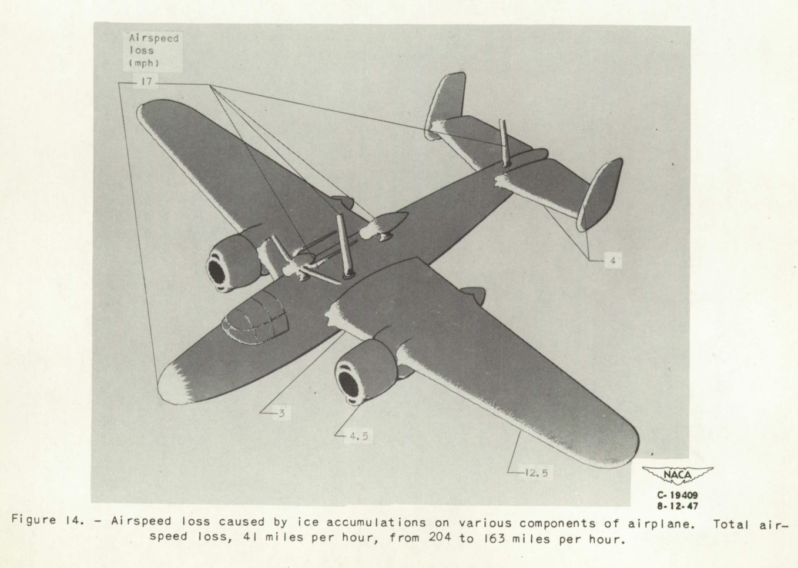

"an irregular shape is developed due to the ice formation, which is ruinous to the aerodynamic efficiency of the airfoils" 1

from NACA-TN-1598 2
Ice Shapes and Their Effects Thread
This thread will cover ice shapes and the aerodynamic effects of the ice.
This will primarily cover ice shapes on unprotected surfaces.
There are additional publications on ice shapes for deicing systems and propellers that will not be reviewed here.
Publications
NACA-TN-313, "The Formation of Ice upon Airplanes in Flight"
Ice shapes are recorded in flight tests in natural icing conditions.
NACA-TR-446, "Airfoil Section Characteristics as Affected by Protuberances"
"Protuberances" on an airfoil can have significant effects on section lift and drag.
NACA-WR-L-292, "Effects of a Simulated Ice Formation on the Aerodynamic Characteristics of an Airfoil"
Airfoil characteristics with simulated residual ice are measured.
NACA-TN-1598, "Effects of Ice Formations on Airplane Performance in Level Cruising Flight"
Airplane levels effects of icing are measured, and broken into major components.
NACA-TN-2962, "Effect of Ice and Frost Formations on Drag of NACA 651_212 Airfoil for Various Modes of Thermal Ice Protection"
By "discriminating use of the data", drag results can be estimated using NACA-TR-446.
NACA-RM-E53J30, "Effect of Ice Formations on Section Drag of Swept NACA 63A-009 Airfoil with Partial-Span Leading-Edge Slat for Various Modes of Thermal Ice Protection
The drag due to ice on a swept airfoil section is measured.
NACA-TN-4151, "Correlations Among Ice Measurements, Impingement Rates, Icing Conditions and Drag Coefficients for an Unswept NACA 65A004 Airfoil"
Correlations are develop between ice shapes, aerodynamic performance, and icing conditions.
NASA-TM-D-2166, "Prediction of Aerodynamic Penalties Caused by Ice Formations on Various Airfoils"
A more general correlation of drag due to ice on an airfoil is developed.
Wilder, Ramon W.: "Techniques used to determine Artificial Ice Shapes and Ice Shedding, Characteristics of Unprotected Airfoil Surfaces"
Glaze ice shape correlations for two commercial aircraft airfoils are developed.